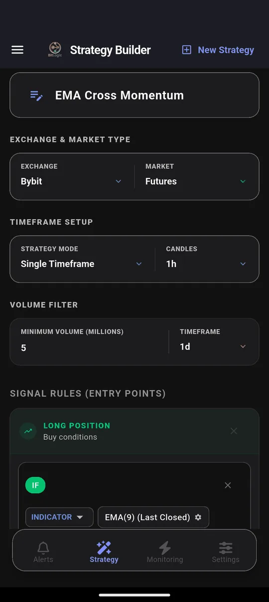
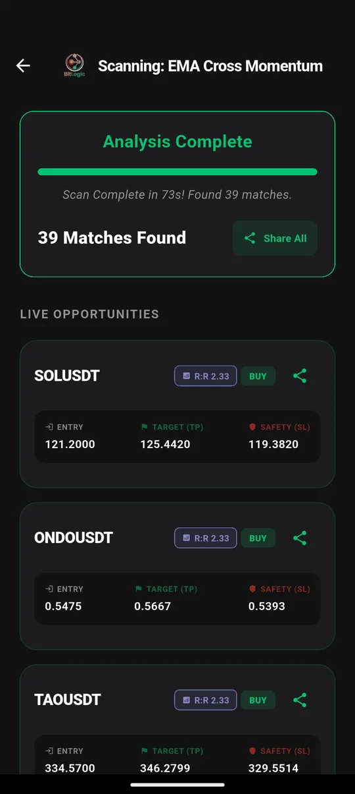

Bybit Futures Screener: Find Pumps, Breakouts and Trend Setups
Quick answer: Bybit's price alerts watch one coin at a time and react only to price. A futures screener checks every perpetual against your own rule, such as a trend stack, a volume spike or a sudden 15-minute jump, and tells you which ones match. BitLogic scanned 400 Bybit perpetuals in 73 seconds on 26 September 2026 and found 39 that matched a trend rule.
BitLogic is a no-code crypto screener and alert app for Android and Windows, with a free web screener. It scans every pair on an exchange against rules you build and sends matches as push notifications, or as Telegram messages on Pro.
Features, availability and test results checked 26 September 2026.
Why Bybit Price Alerts Aren't Enough
"Bybit price alerts not working" is a common search, and often nothing is broken. The alert just can't do what the trader needs:
| Need | Bybit price alert | BitLogic rule |
|---|---|---|
| "Tell me when SOL hits $130" | ✓ | ✓ |
| "Tell me when any perp jumps 3% in 15 minutes" | ✗ | ✓ |
| "RSI crossed back above 30 while price holds the 50 EMA" | ✗ | ✓ |
| "Volume is double its average" | ✗ | ✓ |
| Short setups as well as longs | ✗ | ✓ |
| Alert in Telegram | ✗ | ✓ (Pro) |
A price alert answers one question about one coin. A screener answers your question about the whole exchange.
Can You Use Bybit in Your Country?
Bybit's availability changed a lot in 2025 and 2026:
| Country | Bybit status |
|---|---|
| Australia | Accessible. Check Bybit's current terms for Australian residents |
| United Kingdom | Returned in December 2025 through FCA-authorised partner Archax. Spot only, because UK retail customers can't trade crypto derivatives |
| Germany / EU | The global platform stopped serving EEA residents on 1 July 2026; EU users trade on bybit.eu (MiCA-licensed in Austria) |
| United States | Not available |
| Canada | Not available since 2023 |
Two practical notes:
- UK traders should screen Bybit Spot, not Futures.
- EU traders on bybit.eu: BitLogic reads Bybit's global market, so a few pairs in your results may not be listed on bybit.eu.
Sources: CoinDesk on Bybit's UK return; Bybit's notice for EEA users.
How to Screen Bybit Futures in BitLogic
Step 1: Choose Bybit and Futures
In the Strategy tab, pick Bybit, then Futures for USDT perpetuals, or Spot. Add a minimum-volume filter so thin contracts drop out. This test used $5 million per day.

Step 2: Build or load a rule
Every condition in a rule must be true for a contract to match. This trend rule stacks three moving averages and asks for above-average volume:

Step 3: Scan

Step 4: Automate it
Live Monitoring re-runs the same strategy in the background (every 1, 5, 15 or 30 minutes, every 1 or 4 hours, or once a day) and notifies you when a new pair matches, even with the app closed. You can monitor up to five strategies at once. On Pro, the same alerts also go to Telegram: tap Connect Telegram, press Start in the bot, and you are done.
Screen Bybit free on Google Play, or on Windows.
Two Bybit Tests, Two Very Different Answers
| Rule | Candles | Contracts | Time | Matches |
|---|---|---|---|---|
| Trend stack: EMA 9 > 21 > 200, volume above average | 1h | 400 | 73 s | 39 |
| RSI crosses back above 30 while price is above the 50 EMA | 15m | 400 | 23 s | 0 |
Zero is a real result, not a failure. The second rule asks for a rare combination: momentum turning up from oversold while price is still above its moving average. On most 15-minute candles, no contract on Bybit qualifies.
That's how alerts should behave. A loose rule fires constantly and gets muted. A strict rule stays quiet until something unusual happens, and that's when you want to hear from it.
These are scan results, not recommendations. A match means a pair met the rule at that moment, nothing more.
Three Bybit Rules Worth Building
1. Pump detector
IF Close [15m, Last Closed] Increased by % 3
AND Volume [15m] Is Greater Than Volume SMA(20) × 2"Increased by %" compares the last closed candle with the one before it. This flags any perp that jumped 3% or more in a single 15-minute candle on double its usual volume.
2. Dump detector (Short rule)
IF Close [15m, Last Closed] Decreased by % 3
AND Volume [15m] Is Greater Than Volume SMA(20) × 2The same logic in reverse. Add it as the Short rule of the same strategy, so one alert covers moves in both directions.
3. Trend pullback entry
IF RSI(14) [1h, Last Closed] Is Between 35 and 45
AND EMA(50) [1h] Is Greater Than EMA(200) [1h]This catches a cooled-off RSI inside an established uptrend: a pullback rather than a breakdown.
Add Market-Wide Alerts
Perp traders care about more than price. BitLogic also has ready-made feeds for funding rates, open interest, volume spikes and price anomalies, plus a liquidation feed that tracks large forced closes on Binance, the biggest futures market. Each has its own threshold and runs alongside your custom rules. Read how funding rate alerts work and how liquidation alerts work.
Bybit Timeframes in BitLogic
| Market | Timeframes |
|---|---|
| Bybit Spot and Futures | 1m, 3m, 5m, 15m, 30m, 1h, 2h, 4h, 6h, 12h, 1d, 1w |
FAQ
What is the best crypto screener for Bybit?
It depends on what you trade. If you want alerts on your own rules across every Bybit perpetual, sent to your phone or Telegram, BitLogic scans up to 400 Bybit contracts per run and can re-check them automatically every few minutes.
Why are my Bybit price alerts not firing?
Bybit price alerts only trigger at the price level on the one coin you set them on. They don't react to indicators, volume or moves in other coins. If you need those, you need a screener with rule-based alerts.
Can BitLogic find pumps on Bybit?
Yes. A rule such as "Close increased by 3% on the 15-minute candle AND volume above twice its 20-candle average" flags any Bybit perpetual making that move, and Live Monitoring checks for it automatically.
Is Bybit available in the UK?
Yes, since December 2025, through an FCA-authorised partner. UK customers can trade spot only, because crypto derivatives are banned for UK retail investors. UK users should screen Bybit Spot.
Does BitLogic need my Bybit API key?
No. BitLogic reads Bybit's public market data and never places trades.
The Bottom Line
Bybit's alerts are built for one coin and one price. Moves in perps happen everywhere at once. A screener that checks all 400 contracts against your rule, and stays quiet until something real happens, is the tool for that job.
Download BitLogic free on Google Play and build your first Bybit rule.
Nothing here is financial advice. Perpetual futures are leveraged and high-risk, and exchange availability changes, so check Bybit's terms for your country.